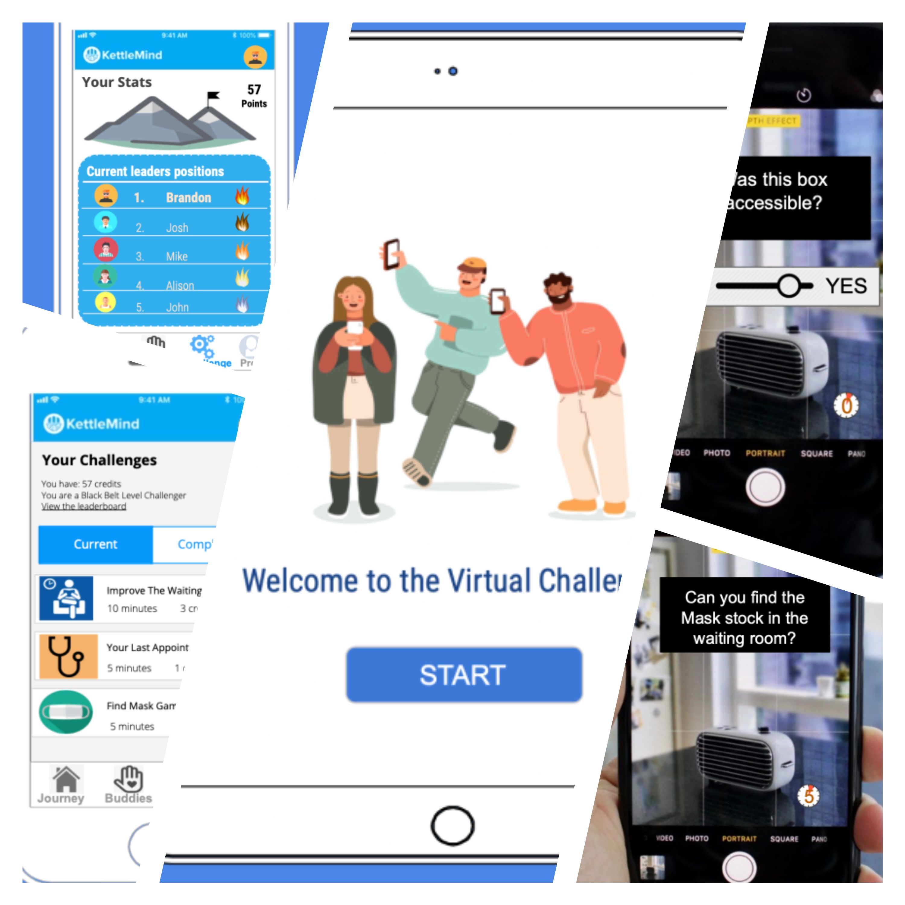

A design exercise ideated for Boston Children’s Hospital and facilitated by the Bentley University’s UX Graduate Association. During the course of two weeks our team underwent an iterative design process in order to improve response rates for Children’s surveys and feedback collection methods.
Figure 1. A Mural board the team used to select the features to add in the prototype.
Problem definition
The problem in this case was reported directly from Boston Children’s Hosptial. Team sorting during the Hackaton revolved around six proposed problems. Our team decided to take problem C, which was the following:
Collecting feedback from child and teen patients is challenging. Currently Children’s collects feedback by sending surveys to parents occasionally, which has a low response rate. How could you collect feedback from this group in a way that is not burdensome?
Ideating and presenting the pitch
During this process, the Hackaton sponsor arranged for three resources, a lesson from a UX researcher about the specifics of conducting interwiews with minors, and two interview sessions of fifteen minutes each. Our team interviewed an expert on Patient Experience and a patient from Boston Children’s Hospital. In order to prepate for the interviews, our team decided to constraint the target audience to teens aged between twelve and eighteen, made some prior research, and came up with initial ideas to pitch. The plan was to most use of the fifteen minutes we had with each interviewee and instead of focusing on getting more information, present small narratives, each representing one idea, and get a ranking from the interviewee in order of preference.
Topics we investigated on
- How to get feedback from teenagers
- Creative ways to collect feedback
- Games and tools teens are using today
- Reasons why people don’t provide feedback
- Children’s current survey process (HCAHPS)
- HIPPA regulations and other best practices to keep patient's data private
Initial brainstorm prototypes
Figure 2. Screenshoot of some of the prototypes
Crafting a pitch
After considering the feedback we got from the interviews, we settled for the one we called “Virtual Challenge”. The idea consisted on making bit sized interactive questions inside a mobile app, which would be triggered under specific circumstances. For example, a patient who is in the waiting room before an appointment would get a question asking him to rate the cleaniness of the room. Engagement in these micro-interactions would be mantained by a reward system and small amount of gamification, offering patients cafeteria credit or the opportunity to win prizes to the highest respondents during a limited period of time. This idea was prototyped using simple image editing software.
We also made sure to make the solution inclusive, providing an alternative device to fill out surveys in case the patient did not have access to a smartphone, as well as paper versions of some of the questions. As well as making sure that the interactions were accessible using the text to speech and text size accomodations inherent of said smartphones.
Figure 3. Some of our prototypes (for illustrative purposes)
Outcomes
After the final round of pitches, our team was awarded the “Best End User Integration” award. This was a great result for the hard work that my teammates made.
![cert.webp] Figure 4. A certificate for participating on the 2020 UXGA Hackaton
Tools used
- Google Suite as a knowledge base for team outputs
- Research engines to explore related literature on the problem and methods (ie. HCAHPS, HIPAA)
- Interviews and note taking with both experts and end-users
- Storytelling to pitch prototypes during interviews
- Miro for idea divergence and convergence
- Sketching Methods like paper, Google slides, etc.
- Zoom and Google Hangouts for team meetings and Hackaton events
Impact and limitations
The most important consideration for the implementation of this project, as it was pointed out during the final presentation, is privacy and compliance with the Health Insurance Portability and Accountability Act (HIPAA), which dictates the way Health Information should be handled inside the United States. A model like this would require sensitive Health Record information, so if it was implemented, any communication should be encrypted and stripped of any identificable information which might link the Health Record with a patient.
As in any entrepeneurship effort, an idea like this would need funding and a business growth plan. Fortunately, Children’s has their own business accelerator and count with the infrastructure required to kick-off health projects with the help of angel investors and technological equipment.